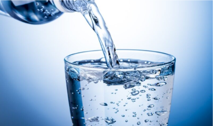

ÁGUA DESMINERALIZADA

A água desmineralizada também conhecida como água deionizada é caracterizada pela sua pureza sendo livre de minerais, íons e metais pesados. Costuma ser utilizada em equipamentos industriais além de ser ingrediente na fabricação de bebidas, alimentos e cosméticos. Vale ressaltar que apesar de pura ela é imprópria para o consumo além de não suprir sua sede ela também é inútil para o corpo, pois não possui sais minerais necessários para a manutenção e equilíbrio do nosso organismo.
O processo de desmineralização da água pode ser feito de diversas maneiras, sendo elas:
Destilação:Considerada a primeira forma utilizada para remoção de sais da água, porém possui um alto consumo energético e seu resultado não elimina completamente a concentração de sais na água.
Processos de Troca Iônica:Esse processo é composto por leitos catiônicos, aniônicos e leitos mistos. Onde nos dois primeiros, 99,5% dos sais são eliminados e o residual apenas consegue se extraído através do leito misto.
Esse tratamento permite que os íons sejam dissolvidos na água, como o magnésio, cloreto, sílica e cálcio. Esse sistema utiliza resinas de troca-pequenas esferas plásticas que possuem superfícies ligadas aos íons usados na troca.
A água deve passar por um ou mais leitos até que eles fiquem carregados de íons e através de um processo químico, realizar a desmineralização da água.
Além do filtro catiônico e do filtro aniônico, o desmineralizador possui um sistema de pressurização, filtro de zeólita que reterá os sólidos, filtro de carvão e medidor de condutividade elétrica.
Osmose reversa:Processo de filtração da água no qual utiliza-se uma membrana especial para obrigá-la a fluir do meio mais concentrado para o menos concentrado, separando-a dos sais.
Sendo um de seus maiores pontos positivos a economia, pois este processo utiliza quantidades pequenas de produtos, usados apenas na limpeza das membranas a cada 60 a 90 dias, além de gerar uma água com alto grau de pureza. Também tem um grande potencial de reuso, de cerca de 50 a 80% dos efluentes.
Como ponto negativo destaca o fato de necessitar de muitos cuidados, incluindo um pré-tratamento adequado e um acompanhamento especializado das membranas para evitar a proliferação de microrganismos.
Eletrodiálise: Processo utilizado quando o objetivo principal é um nível baixo de condutividade da água. Ele não leva produtos químicos ao invés disso, usa correntes elétricas para mover íons pelas membranas de troca iônica seletiva para remover íons da água. Costuma ser utilizado em indústrias farmacêuticas.
Abrandamento:Sistema normalmente utilizado com o objetivo de tratar a água dura, ou seja, o excesso de cálcio e magnésio na água. Apesar de também usar um processo de troca iônica, sua aplicação é mais limitada, já que não é capaz de eliminar outros sais, como cloreto e sílica. Seu uso é mais comum em caldeiras de baixa pressão ou em processos que não desejam formação de espuma.